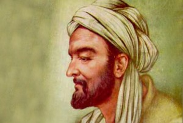

İbni Sina
Felsefe, matematik, astronomi, fizik, kimya, tıp ve müzik gibi bilgi ve becerinin çeşitli alanlarında seçkinleşmiş olan, İbn-i Sinâ (980-1037), matematik alanında matematiksel terimlerin tanımları; astronomi alanında ise duyarlı gözlemlerin yapılması konularıyla ilgilenmiştir.
Astroloji ve simyaya itibar etmemiş, Dönüşüm Kuramı'nın doğru olup olmadığını yapmış olduğu deneylerle araştırmış ve doğru olmadığı sonucuna ulaşmıştır. İbn-i Sinâ'ya göre, her element sadece kendisine özgü niteliklere sahiptir ve dolayısıyla daha değersiz metallerden altın ve gümüş gibi daha değerli metallerin elde edilmesi mümkün değildir.
İbn-i Sinâ, mekanikle de ilgilenmiş ve bazı yönlerden Aristoteles'in hareket anlayışını eleştirmiştir. Aristoteles, cismi hareket ettiren kuvvet ile cisim arasındaki temas ortadan kalktığında, cismin hareketini sürdürmesini sağlayan etmenin ortam, yani hava olduğunu söylüyor ve havaya, biri cisme direnme ve diğeri cismi taşıma olmak üzere birbiriyle bağdaşmayacak iki görev yüklüyordu.
İbn-i Sinâ, bu çelişik durumu görmüş, yapmış olduğu gözlemler sırasında hava ile rüzgârın güçlerini karşılaştırmış ve Aristoteles'in haklı olabilmesi için havanın şiddetinin rüzgârın şiddetinden daha fazla olması gerektiği sonucuna varmıştır. Oysa bir ağacın yakınından geçen bir ok, ağaca değmediği sürece, ağaçta ve yapraklarında en ufak bir kıpırdanma yaratmazken, rüzgâr, ağaçları sallamakta ve hatta kökünden kopartabilmektedir; öyleyse havanın şiddeti, cisimleri taşımaya yeterli değildir.
İbn-i Sinâ, her şeyden önce bir hekimdir ve bu alandaki çalışmalarıyla tanınmıştır. Tıpla ilgili birçok eser kaleme almıştır; bunlar arasında özellikle kalp-damar sistemi ile ilgili olanlar dikkat çekmektedir. Ancak, İbn-i Sinâ dendiğinde, onun adıyla özdeşleşmiş ve Batı ülkelerinde 16. yüzyılın ve Doğu ülkelerinde ise 19. yüzyılın başlarına kadar okunmuş ve kullanılmış olan "el-Kânûn fî't-Tıb" (Tıp Kanunu) adlı eseri akla gelir.
Beş kitaptan oluşan bu ansiklopedik eserin birinci kitabı, anatomi ve koruyucu hekimlik, ikinci kitabı basit ilaçlar, üçüncü kitabı patoloji, dördüncü kitabı ilaçlarla ve cerrahi yöntemlerle tedavi ve beşinci kitabı ise çeşitli ilaç terkipleriyle ilgili ayrıntılı bilgiler vermektedir.
İbn-i Sinâ'nın söz konusu eseri incelendiğinde, konuları sistematik bir biçimde incelediği görülür. Tarihte ilk defa, tıp ve cerrahiyi iki ayrı disiplin olarak değerlendiren İbn-i Sinâ, cerrahi tedavinin sağlıklı olarak yürütülebilmesi için anatominin önemini özellikle vurgulamıştır. Hayati tehlikenin çok yüksek olmasından ötürü pek gözde olmayan cerrahi tedavi ile ilgili örnekler vermiş ve ameliyatlarda kullanılmak üzere bazı aletler önermiştir.
Gözle de ilgilenmiş olan İbn-i Sinâ, döneminin seçkin fizikçilerinden İbn-i Heysem gibi, Göz-Işın Kuramı'nı savunmuş ve üst göz kapağının dışa dönmesi, sürekli beyaz renge veya kara bakmaktan meydana gelen kar körlüğü gibi daha önce söz konusu edilmemiş hastalıklar hakkında da ayrıntılı açıklamalarda bulunmuştur.
İbni Sina'nın Eserleri
El-Kanun fi't-Tıb ("Hekimlik Yasası")
Kitabü'l-Necat ("Kurtuluş Kitabı")
Risale fi-İlmü'l-Ahlak ("Ahlak Konusunda Kitapçık")
İşarat ve'l-Tembihat ("Belirtiler ve Uyarılar")
Kitabü'ş-Şifa ("Sağlık Kitabı")